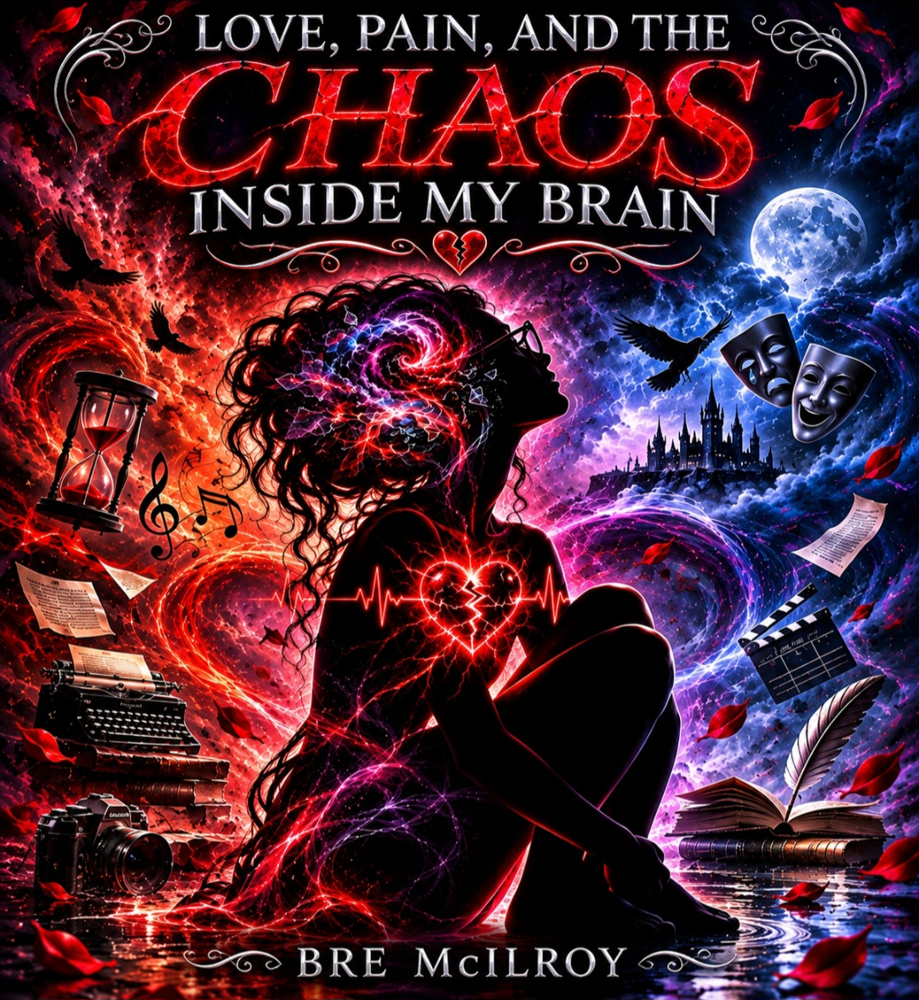

03 / Collection in progress
Creative Writing & Stories
A space for imaginative narratives and original storytelling.
Selected work will be added here.
Words & melodies
Poetry, songwriting, and stories that make room for every part of being human.
Verses exploring love, loss, identity, resilience, and hope.
View collection 02Emotional storytelling and creative expression through songwriting.
View collection 03A space for imaginative narratives and original storytelling.
View collection 04Experiences, lessons, and moments expressed through words.
View collection 05Poetry contributions and literary accomplishments.
View collection 06A collection space for dialogue and performance writing.
View collection01 / Poetry

Love, heartbreak, emotional struggle, resilience, and self-discovery in an original poetry collection.
View the book05 / Published works
This poem is featured in the anthology. A reading sample and publication images will be added when selected.
02 / Music & songwriting
Thirteen songs exploring identity, relationships, invisible struggles, and resilience. Original lyrics by Bre McIlroy, with music and vocals created with AI.
Read complete lyrics for all 13 songs, explore every title, and visit the Spotify artist profile.
Explore the music collection →I’m still a work in progress
Still figuring it outMy Mind Is Over Crowded
03 / Collection in progress
A space for imaginative narratives and original storytelling.
Selected work will be added here.
04 / Collection in progress
Experiences, lessons, and moments expressed through words.
Selected work will be added here.
06 / Collection in progress
A collection space for dialogue and performance writing.
Selected work will be added here.